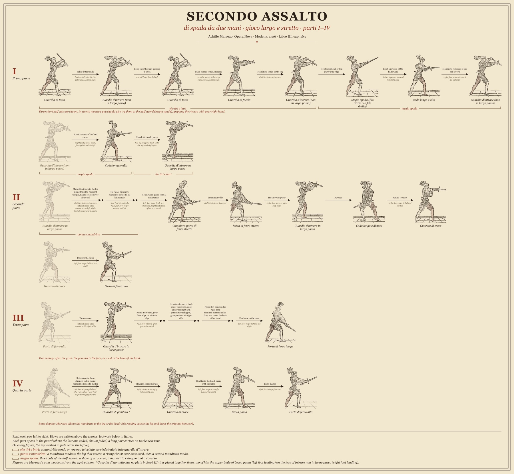
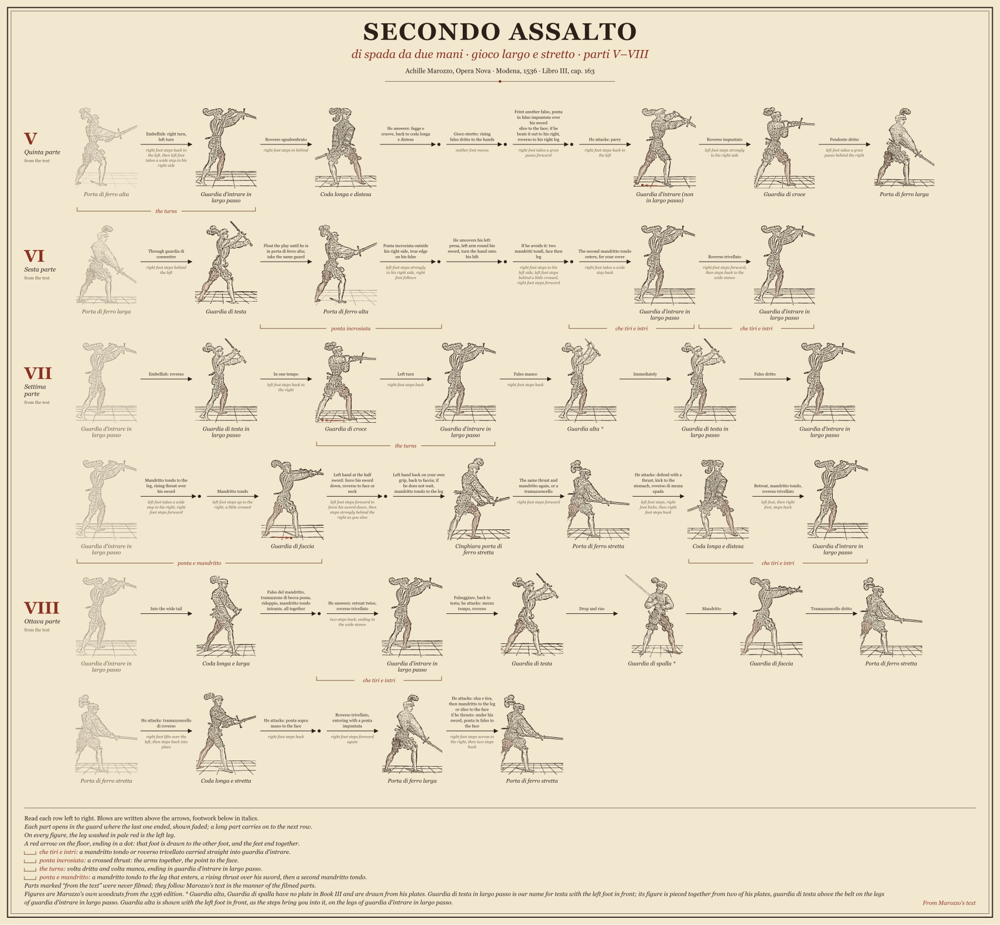
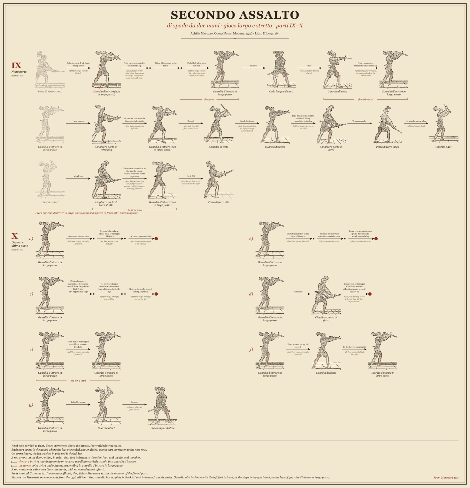
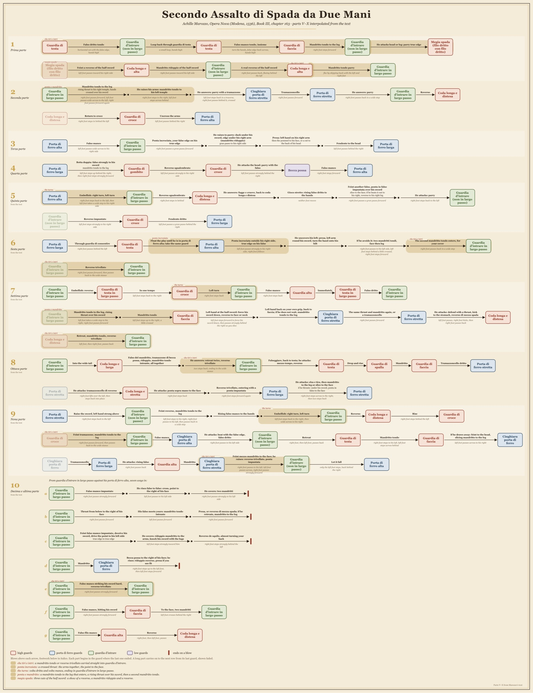

Marozzo · Spadone
Secondo assalto
di spada da due mani · Achille Marozzo, Opera Nova, Modena 1536, Libro III, cap. 163 · ten parts, gioco largo e stretto
The second assault of the two-handed sword, in wide and narrow play together. Parts I–IV follow a modern interpretation checked against the 1536 text; parts V–X are read from the text alone. Each part begins in the guard where the last one ended. The second assault is long, so the figure poster comes in three sheets, all 24 in wide so they hang as a set.
Video, all ten parts, with part X's seven ways in one after another: Marozzo's woodcuts dissolving from guard to guard, with each blow and its footwork captioned. Download.

Primer, a 36-page booklet that takes the assalto one part at a time: Marozzo's words in Italian and English, then the sequence in his woodcuts, with space for notes. PDF for reading · PDF for printing (half-letter booklet on nine letter sheets: print double-sided, flip on the short edge, fold in half).

Parts I–IV: PDF for printing (about 24 × 18.5 in landscape).

Parts V–VIII: PDF for printing (about 24 × 22 in landscape).

Parts IX–X: PDF for printing (about 24 × 25 in).

Flow diagram, all ten parts on one sheet; long parts carry on to a second row, and part X shows its seven ways in as separate rows: PDF for printing (about 47 × 59 in). The sequence data is in secondo-assalto.json.
Before it: Primo assalto